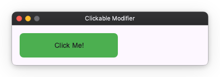
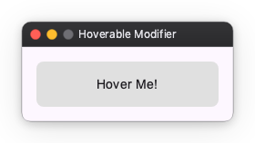
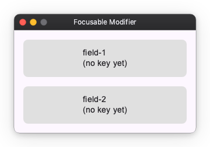
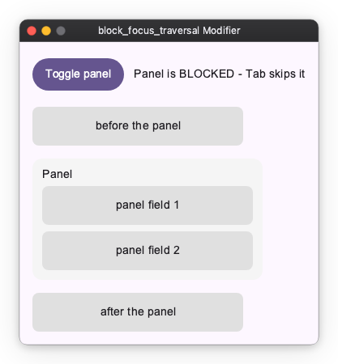

Interaction Modifiers¶
Interaction modifiers are used to add interactivity to Widgets, such as clickability, hoverability, and focusability.
Clickable¶
You can make a Widget clickable using the clickable modifier. It takes an on_click callback that is invoked when the Widget is clicked.
import nuiitivet.material as nv
# Clickable box
box = nv.Container(child=nv.Text("Click Me!")).modifier(
nv.background("#4CAF50")
| nv.corner_radius(8)
| nv.clickable(on_click=lambda: print("Clicked!"))
)

Hoverable¶
You can make a Widget hoverable using the hoverable modifier. It takes an on_hover_change callback that is invoked when the mouse pointer enters or leaves the Widget.
import nuiitivet.material as nv
class HoverDemo(nv.ComposableWidget):
def __init__(self):
super().__init__()
self.is_hovered = nv.Observable(False)
def _set_hovered(self, hovered: bool) -> None:
self.is_hovered.value = hovered
def build(self):
bg_color = self.is_hovered.map(lambda h: "#2196F3" if h else "#E0E0E0")
return nv.Container(
width=200,
height=50,
child=nv.Text("Hover Me!"),
alignment="center",
).modifier(
nv.background(bg_color)
| nv.corner_radius(8)
| nv.hoverable(on_hover_change=self._set_hovered)
)

Focusable¶
You can make a Widget focusable using the focusable modifier. It takes an on_focus_change callback that is invoked when the Widget gains or loses focus.
import nuiitivet.material as nv
class FocusDemo(nv.ComposableWidget):
def __init__(self):
super().__init__()
self.is_focused = nv.Observable(False)
def _set_focused(self, focused: bool) -> None:
self.is_focused.value = focused
def build(self):
border_color = self.is_focused.map(lambda f: "#2196F3" if f else "#00000000")
return nv.Container(
width=200,
height=50,
child=nv.Text("Focus with Tab"),
alignment="center",
).modifier(
nv.background("#E0E0E0")
| nv.corner_radius(8)
| nv.border(color=border_color, width=2)
| nv.focusable(on_focus_change=self._set_focused)
)

Blocking focus traversal¶
block_focus_traversal() removes a whole subtree from the Tab sequence while its condition is truthy. Focus held inside the subtree is released, so the focus ring never ends up on something the user cannot reach.
import nuiitivet.material as nv
# TabStop is any focusable widget - see samples/modifiers/interaction/block_focus_traversal.py
class BlockFocusTraversalDemo(nv.ComposableWidget):
def __init__(self):
super().__init__()
self.blocked = nv.Observable(True)
def _toggle(self) -> None:
self.blocked.value = not self.blocked.value
def build(self):
panel = nv.Column(
children=[TabStop("panel field 1"), TabStop("panel field 2")],
gap=8,
padding=12,
).modifier(
nv.background("#F5F5F5")
| nv.corner_radius(12)
| nv.block_focus_traversal(self.blocked)
)
return nv.Column(
children=[
nv.Button("Toggle panel", on_click=self._toggle),
TabStop("before the panel"),
panel,
TabStop("after the panel"),
],
gap=16,
padding=16,
)

While blocked is True, Tab goes from before the panel straight to after the panel, and focusing a panel field is impossible — focus already inside is released as soon as the subtree becomes blocked.
It only affects keyboard traversal — layout, painting and hit-testing are untouched, so the panel above is still fully visible and clickable while blocked. Use passthrough_pointer() alongside it to block pointer input as well, or simply use visible(), which composes both. To control which of several overlapping widgets catches a click, see Pointer Participation.
Raw pointer input¶
clickable and hoverable are convenience layers: they collapse a press and
release into a single click, and reduce hover to a bool. When you need the
individual pointer events — press, move, release, enter, leave and scroll, each
carrying its position, the buttons held and the modifier keys — use
pointer_input. It is the low-level "Listener" layer, mirroring Compose's
Modifier.pointerInput and Flutter's Listener.
Each callback receives a PointerEvent and may be sync or async:
import nuiitivet.material as nv
def on_press(e: nv.PointerEvent) -> None:
begin_stroke(e.local_x, e.local_y)
def on_move(e: nv.PointerEvent) -> None:
if e.buttons & nv.BUTTON_LEFT: # a button is held — this is a drag, not a hover
extend_stroke(e.local_x, e.local_y)
surface = nv.Container(width=320, height=240).modifier(
nv.corner_radius(8)
| nv.pointer_input(
on_press=on_press,
on_move=on_move,
on_release=lambda e: end_stroke(),
buttons=(nv.BUTTON_LEFT,), # only the left button triggers press/release
capture=True, # keep delivering move/release off the widget
)
)
Coordinates: local vs screen¶
A PointerEvent carries two coordinate pairs:
local_x/local_yare widget-relative — measured from the top-left of the widget that received the event. Use these to map a press onto your content.x/yare screen (window) coordinates.
For an Image that scales its source bitmap, local_x / local_y are relative
to the displayed rect; mapping them back to source-image pixels (accounting for
your fit / aspect-ratio choice) stays your responsibility.
Held buttons¶
event.buttons is a bitmask of the buttons currently held down (OR-ed
BUTTON_* codes). Because a plain hover move and a drag both arrive as moves,
check event.buttons inside on_move to tell whether a drag is actually in
progress. event.button (singular) is only the button that caused this
press/release.
Capture¶
With capture=True (the default) the pointer is captured on press, so on_move
and on_release keep arriving even after the pointer leaves the widget bounds —
essential for a drag that runs off the edge. With capture=False, moving
outside the bounds delivers on_leave and stops on_move.
Reacting to modifier keys while stationary¶
Reading event.modifier_keys handles Ctrl+click for free — the mask rides on
every pointer event, so you never track modifier-key state yourself (that state
desyncs on focus change and window deactivation). The one case it misses is the
pointer sitting still while the user presses a modifier key: no pointer event
is generated. on_modifier_keys_change fills that gap — it fires whenever the
held modifier-key mask changes while the pointer is inside or captured,
delivering a PointerEvent synthesized at the current position:
import nuiitivet.material as nv
def on_modifier_keys_change(e: nv.PointerEvent) -> None:
set_cursor(EYEDROPPER if e.modifier_keys & nv.MOD_ALT else BRUSH)
surface.modifier(nv.pointer_input(on_modifier_keys_change=on_modifier_keys_change))
It fires during a capture too (i.e. mid-drag, even when the pointer is outside the widget), and never fires for non-modifier keys or when the pointer is neither inside nor captured. The runnable event-inspector sample prints the whole stream — event type, local and screen coordinates, held buttons and modifier-key mask — as it arrives.
pointer_input composes with clickable on the same widget without either
clobbering the other, so you can keep a semantic click alongside the raw stream.
Receiving file drops¶
The drop_target modifier opts a widget into receiving files dragged in from
the OS (Finder, Explorer, a file manager). The drop is routed to the innermost
widget under the drop point that accepts drops — not broadcast globally — and
bubbles to an accepting ancestor only when no descendant consumed it. A drop
that lands where nothing accepts is silently discarded.
The callback may be sync or async and receives a FileDropEvent:
import nuiitivet.material as nv
def on_drop(e: nv.FileDropEvent) -> None:
for path in e.paths: # tuple[pathlib.Path, ...]
open_document(path)
drop_zone = nv.Container(
width=320,
height=240,
child=nv.Text("Drop files here"),
alignment="center",
).modifier(
nv.background("#E3F2FD")
| nv.corner_radius(8)
| nv.drop_target(on_drop=on_drop)
)
FileDropEvent.paths holds the dropped files as pathlib.Path objects (a
multi-file drop delivers them all in one event). Like PointerEvent, the event
carries two coordinate pairs: local_x / local_y are relative to the widget's
top-left, x / y are window coordinates of the drop point.
Two platform notes:
- The OS reports only the final drop — there is no drag-enter / drag-over stream — so a "highlight while hovering with a file" affordance cannot be built today.
- Delivery depends on the windowing backend's drop support (macOS, Windows and X11); on Wayland it may not fire.
Keyboard shortcuts¶
focusable(on_key=...) delivers raw keys to the focused widget. A shortcut
is a different thing: a key gesture bound to a command (Ctrl+S → save).
key_shortcut binds one:
Accel is the primary modifier key — Cmd on macOS, Ctrl everywhere else — so
one declaration covers every platform. It is resolved when the key is matched,
not when the shortcut is built, so a Shortcut value stays portable. Write
Ctrl/Meta explicitly only when you really mean that one physical key. The
gesture also accepts a typed form, Shortcut("s", MOD_ACCEL | MOD_SHIFT), when
you want to build it from modifier-key masks rather than parse a string.
A shortcut does not need focus¶
By default a binding is live whenever its subtree is displayed — no focus
required. A paint canvas gets its Accel+Z even though nothing in a paint app is
ever focused, and it keeps working while the user types in a toolbar text field.
The focused widget still gets first refusal on every key, so a focused
TextField keeps eating the keys it uses (Accel+C, Accel+V, …) before any
shortcut is consulted.
Typing never fires a shortcut¶
A bare-letter gesture is the standard paint/vector idiom — B for brush, V for
select — and it is safe to bind:
While a text field holds focus, the keys it would type are withheld from the
shortcut layer entirely. Typing "brush" into a field inserts the letters and
fires nothing. Unfocus the field and B selects the brush again.
This covers bare letters, Shift+letter, and Space. Gestures using the Accel
modifier key are unaffected: Accel+S produces no text, so it reaches your
binding even while the user is typing.
Current limitations¶
Two rough edges, both of which follow from the same thing: whether a key press will become text cannot be decided from the key and the modifier keys alone.
Alt gestures do not fire while a text field has focus. Alt cannot be
treated as a safe "command" modifier key: on macOS Option types characters
(Option+A → å), and Windows and X11 report AltGr as Ctrl+Alt, so
Ctrl+Alt+Q is how a German layout types @. Rather than risk a keystroke
silently running a command while you type, every gesture holding the Alt
modifier key — including Ctrl+Alt — is treated as text input and withheld.
Prefer Accel for commands; if you must bind Alt, expect it to be inert while
a field is focused.
Enter reaches a shortcut when the focused field does not use it. A
key_shortcut("enter", ...) fires even with a TextField focused, unless that
field claims Enter itself — which it only does when an on_submit is set. So
whether Enter reaches your binding depends on how the field was configured,
which is easy to trip over. A field that only needs to react to the user
leaving it takes on_focus_change instead, and leaves Enter alone. There is
no notion of a dialog "default
action" yet; until there is, do not rely on Enter as a shortcut in a screen
that also has text fields.
Scopes¶
scope decides when a binding is live. The three widen in order:
| Scope | Live when | Use for |
|---|---|---|
FOCUS |
the subtree contains the focused widget | the same command has several targets displayed at once |
FOREGROUND (default) |
the subtree is on the topmost interactable layer | almost everything |
MOUNT |
the subtree is in the widget tree at all | app-wide commands that must survive navigation |
FOREGROUND excludes a subtree that is hidden by visible(False), that sits on a
navigation route another route now covers, or that is behind a modal dialog. In
each case the user cannot act on it, so its commands must not fire.
MOUNT is how an app-wide command is expressed. App(Window(content=X)) keeps X
mounted for the life of the app — a route push covers it but does not unmount it
— so binding there survives navigation:
nv.App(
nv.Window(
content=home.modifier(
nv.key_shortcut("Accel+Q", on_trigger=quit, scope=nv.ShortcutScope.MOUNT)
),
),
)
When two panes want the same gesture¶
FOREGROUND bindings have no ordering between them. If two displayed panes both
bind Accel+S, that is ambiguous: nothing fires, and a warning is logged
rather than picking one arbitrarily.
FOCUS is the way to express such a case — and the only case that needs it:
several targets of the same command on screen simultaneously, where only focus
can decide. A dual-pane file manager (F5 copies from the focused pane), a
split-view editor, a two-list picker:
class TextEditorPane(nv.ComposableWidget):
def build(self):
return editor_subtree.modifier(
nv.key_shortcut("Accel+S", on_trigger=self.save, scope=nv.ShortcutScope.FOCUS)
)
A tabbed editor is not one of these: the inactive tab is not displayed, so
FOREGROUND already tells the panes apart. And when the command's target is
the focused widget itself, focusable(on_key=...) already suffices.
When nested subtrees bind the same gesture with FOCUS, the innermost one
containing focus wins; the outer one does not also fire.
See the runnable
sample,
which shows a FOREGROUND canvas and two FOCUS editor panes side by side.
Bind where the command is owned¶
The binding location must follow who owns the command — never "the nearest convenient widget."
Saving a painting is a document concern. It is not owned by the Canvas (whose
concern is drawing) and not owned by the Save menu item (that item is one UI
that triggers the command; menus get unmounted, and Ctrl+S must still work).
Both the menu item and the shortcut merely reference the same callback.
The owner decides the scope:
| Owner of the command | Scope |
|---|---|
| a subtree, chosen by which pane is active | FOCUS |
| a subtree, unambiguous while displayed | FOREGROUND |
| the app — must survive navigation (New Window, Quit) | MOUNT, on the content root |
The full rationale, including why there is no application-level registry, is in docs/design/KEYBOARD_SHORTCUTS.md.